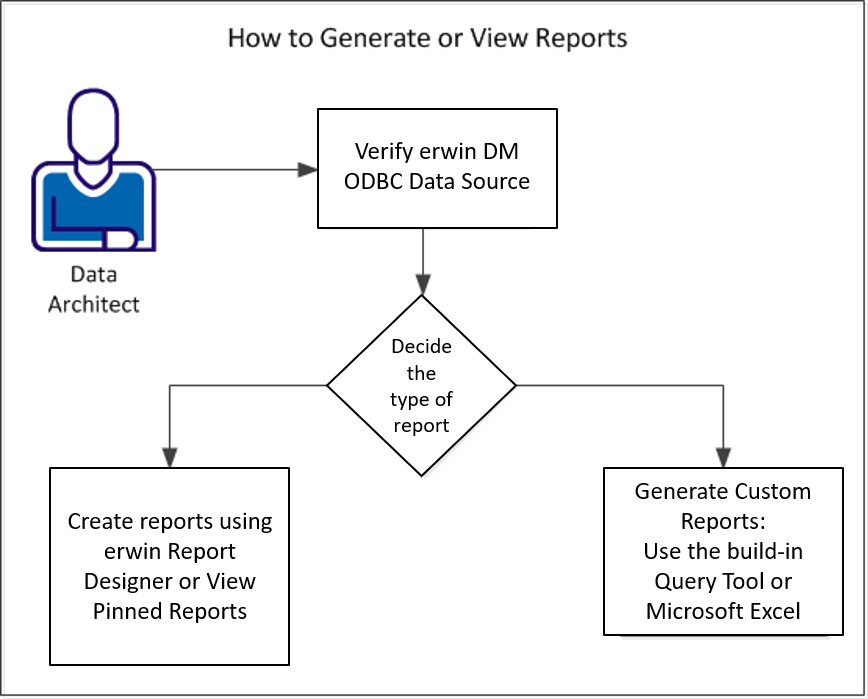

Your reporting needs could vary from a simple report on a logical model to a complex report on the model metadata. Regardless of your needs, erwin DM provides easy options to generate and view reports on models and metadata of models.
The new reporting tool Report Designer lets you generate a wide variety of reports on the most recent data. Use the Filter By option to drill-down reports to the object level. Apart from this, if you want a standard report, use the predefined (or Pinned) reports. If you want a specific report customized to your needs, generate a custom report.
This tutorial describes how Data Architects can generate or view reports about models and the metadata of models.
Use SQL-based reporting tools to query erwin ODBC and generate custom reports. Use the built-in Query Tool or any ODBC-compliant tool. erwin DM Bookshelf includes sample queries that help you with SQL queries for custom reports. Use the queries as they are, or tweak them to suit your requirements. Save your custom queries for future use.
The information you retrieve includes reports on the following:
To use an ODBC-compliant tool, you make use of the data sources created by erwin DM. You must know to write SQL queries.
The following diagram illustrates how you can generate reports on model metadata:

Use the following tasks to generate reports on model metadata: